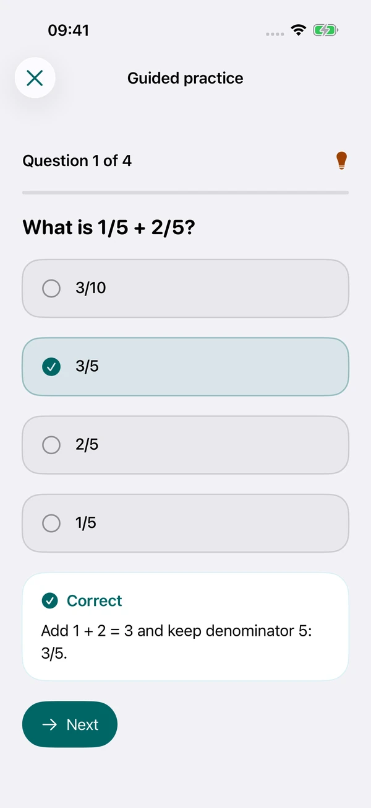
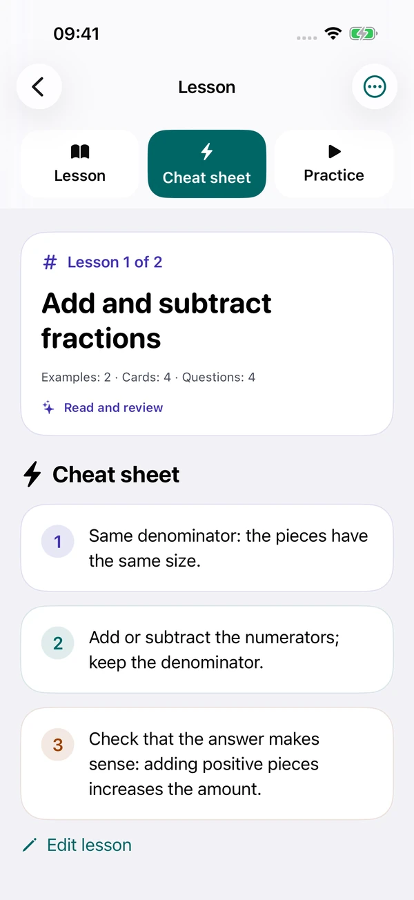

EN
ਕਦਮ ਦਰ ਕਦਮ ਸਮਝੋ
ਵਿਆਖਿਆਵਾਂ ਅਤੇ ਹੱਲ ਕੀਤੀਆਂ ਉਦਾਹਰਨਾਂ ਤੁਹਾਡੀ ਆਪਣੀ ਸਮੱਗਰੀ ਲਈ ਸਪਸ਼ਟ ਸ਼ੁਰੂਆਤ ਦਿੰਦੀਆਂ ਹਨ।
ਹਰ ਰੋਜ਼ ਥੋੜ੍ਹਾ ਅਭਿਆਸ
ਆਪਣੀਆਂ ਫ਼ੋਟੋਆਂ, PDF ਅਤੇ ਨੋਟਸ ਤੋਂ ਪਾਠ, ਫਲੈਸ਼ਕਾਰਡ ਅਤੇ ਅਭਿਆਸ ਕਵਿਜ਼ ਬਣਾਓ। ਖਰੜਿਆਂ ਦੀ ਜਾਂਚ ਕਰੋ ਅਤੇ ਆਪਣੀ ਰਫ਼ਤਾਰ ਨਾਲ ਸਿੱਖੋ।
iPhone & iPad · iOS / iPadOS 26+ · ਜਲਦੀ App Store ਉੱਤੇ

ਨਮੂਨਾ ਅਧਿਐਨ ਸਮੱਗਰੀ ਵਾਲੀਆਂ ਐਪ ਸਕ੍ਰੀਨਾਂ। ਅਭਿਆਸ ਤੋਂ ਪਹਿਲਾਂ AI ਦੇ ਖਰੜੇ ਜਾਂਚੋ।
ਵਿਆਖਿਆਵਾਂ ਅਤੇ ਹੱਲ ਕੀਤੀਆਂ ਉਦਾਹਰਨਾਂ ਤੁਹਾਡੀ ਆਪਣੀ ਸਮੱਗਰੀ ਲਈ ਸਪਸ਼ਟ ਸ਼ੁਰੂਆਤ ਦਿੰਦੀਆਂ ਹਨ।

ਸਾਰ ਅਤੇ ਸਰੋਤ ਨਾਲ ਜੁੜੇ ਕਾਰਡ ਮਹੱਤਵਪੂਰਨ ਵਿਚਾਰਾਂ ਲਈ ਥਾਂ ਬਣਾਉਂਦੇ ਹਨ।
ਸਵਾਲ ਅਜ਼ਮਾਓ, ਸੰਕੇਤ ਮੰਗੋ ਅਤੇ ਉਨ੍ਹਾਂ ਹਿੱਸਿਆਂ ਵੱਲ ਮੁੜੋ ਜਿਨ੍ਹਾਂ ਨੂੰ ਦੁਬਾਰਾ ਵੇਖਣ ਦੀ ਲੋੜ ਹੈ।
AnyPractice
ਪਾਠ ਪਛਾਣ ਤੁਹਾਡੇ ਡਿਵਾਈਸ ਉੱਤੇ ਚੱਲਦੀ ਹੈ। ਆਯਾਤ ਕੀਤੀਆਂ ਫੋਟੋਆਂ ਅਤੇ PDF ਵੀ ਤੁਹਾਡੀ ਸਮੱਗਰੀ ਨਾਲ ਸਥਾਨਕ ਤੌਰ ਉੱਤੇ ਸੰਭਾਲੇ ਜਾਂਦੇ ਹਨ। Pro ਪਾਠਾਂ ਲਈ, ਸਮੀਖਿਆ ਅਤੇ ਪੁਸ਼ਟੀ ਕਰਨ ਤੋਂ ਬਾਅਦ ਤੁਸੀਂ ਫੋਟੋ ਜਾਂ ਚੁਣੇ ਹੋਏ ਪੂਰੇ PDF ਪੰਨੇ OpenAI ਨੂੰ ਭੇਜ ਸਕਦੇ ਹੋ। ਸਿਰਫ਼ ਪਾਠ ਵਾਲੇ ਮੋਡ ਕੇਵਲ ਸਮੀਖਿਆ ਕੀਤਾ ਪਾਠ ਭੇਜਦੇ ਹਨ।
ਪਰਦੇਦਾਰੀ ਨੀਤੀਸਰਗਰਮ Pro ਤੋਂ ਬਿਨਾਂ ਬਣਾਉਣ ਲਈ ਆਪਣੀ API ਕੁੰਜੀ ਚਾਹੀਦੀ ਹੈ। ਜਦੋਂ ਤੱਕ ਤੁਸੀਂ ਸਪਸ਼ਟ ਤੌਰ ਉੱਤੇ ਹੋਰ ਪ੍ਰਦਾਤਾ ਨਹੀਂ ਚੁਣਦੇ, Pro ਡਿਫੌਲਟ ਤੌਰ ਉੱਤੇ ਸਾਡੀ ਸੇਵਾ ਵਰਤਦਾ ਹੈ। ਜੰਤਰ ਅਤੇ ਸਰੋਤ ਤੇ ਸਵਾਲਾਂ ਦੀਆਂ ਦੋਵੇਂ ਭਾਸ਼ਾਵਾਂ ਸਮਰਥਿਤ ਹੋਣ ਉੱਤੇ ਸਰੋਤ-ਅਧਾਰਿਤ ਫਲੈਸ਼ਕਾਰਡਾਂ ਦੇ ਖਰੜਿਆਂ ਲਈ Apple Intelligence ਸਿਰਫ਼ Pro ਨਾਲ ਉਪਲਬਧ ਹੈ। ਪਾਠ, ਸਾਰ ਅਤੇ ਕਵਿਜ਼ ਬਣਾਉਣ ਲਈ ਕਲਾਊਡ ਕਨੈਕਸ਼ਨ ਚਾਹੀਦਾ ਹੈ। Pro ਦੀ ਮਿਆਦ ਮੁੱਕਣ ਉੱਤੇ Pro ਰਾਹੀਂ ਬਣਾਉਣਾ ਰੁਕਦਾ ਹੈ; Apple ਅਣਉਪਲਬਧ ਹੋਣ ਉੱਤੇ ਚੁਣਿਆ Apple ਰਾਹ ਰੁਕਦਾ ਹੈ। ਐਪ ਪ੍ਰਦਾਤਾ ਆਪਣੇ ਆਪ ਨਹੀਂ ਬਦਲਦਾ। OpenAI, Anthropic, Gemini ਜਾਂ ਅਨੁਕੂਲ ਪ੍ਰਦਾਤਾ ਨਾਲ ਨਿੱਜੀ API ਕੁੰਜੀ ਵਰਤੋ। API ਵਰਤੋਂ ਦਾ ਬਿੱਲ ਪ੍ਰਦਾਤਾ ਵੱਖਰੇ ਤੌਰ ਉੱਤੇ ਲੈਂਦਾ ਹੈ।
ਬਿਹਤਰੀਨ ਮਾਡਲਾਂ ਨਾਲ ਪਾਠ, ਵਿਆਖਿਆਵਾਂ, ਸਾਰਾਂਸ਼ ਅਤੇ ਅਭਿਆਸ ਬਣਾਓ।
Pro ਕਲਾਊਡ ਸੇਵਾ ਵਰਤਦੇ ਸਮੇਂ: Pro ਵਿੱਚ ਹਰ UTC ਕੈਲੰਡਰ ਮਹੀਨੇ ਵਿੱਚ ਸ਼ੁਰੂ ਕੀਤੀਆਂ ਵੱਧ ਤੋਂ ਵੱਧ 60 ਬਣਾਉਣ ਦੀਆਂ ਬੇਨਤੀਆਂ ਅਤੇ ਹਰ UTC ਦਿਨ ਵੱਧ ਤੋਂ ਵੱਧ 5 ਸ਼ਾਮਲ ਹਨ। ਪੂਰੀ ਸੇਵਾ ਦੀ ਵਰਤੋਂ ਅਤੇ ਬਜਟ ਦੀਆਂ ਹੱਦਾਂ ਕਾਰਨ ਤੁਹਾਡਾ ਨਿੱਜੀ ਕੋਟਾ ਮੁੱਕਣ ਤੋਂ ਪਹਿਲਾਂ ਸਮੱਗਰੀ ਬਣਾਉਣਾ ਅਸਥਾਈ ਤੌਰ 'ਤੇ ਰੁਕ ਸਕਦਾ ਹੈ। ਸ਼ੁਰੂ ਹੋਈਆਂ ਬੇਨਤੀਆਂ ਅਸਫਲ ਜਾਂ ਰੁਕਣ ਉੱਤੇ ਵੀ ਗਿਣੀਆਂ ਜਾਂਦੀਆਂ ਹਨ। ਸੰਭਾਲੀ ਸਮੱਗਰੀ ਆਫਲਾਈਨ ਉਪਲਬਧ ਰਹਿੰਦੀ ਹੈ।
ਅਮਰੀਕੀ ਕੀਮਤਾਂ: ਸਵੈਚਲਿਤ ਨਵੀਨੀਕਰਨ ਨਾਲ ਮਹੀਨੇ ਦੇ $6.99 ਜਾਂ ਸਾਲ ਦੇ $49.99। ਸਥਾਨਕ ਕੀਮਤ, ਉਪਲਬਧਤਾ ਅਤੇ ਅੰਤਿਮ ਸ਼ਰਤਾਂ App Store ਵਿੱਚ ਦਿਖਾਈਆਂ ਜਾਂਦੀਆਂ ਹਨ। Apple ਖਾਤੇ ਵਿੱਚ ਪ੍ਰਬੰਧਨ ਜਾਂ ਰੱਦ ਕਰੋ; ਐਪ ਵਿੱਚ ਖਰੀਦਾਂ ਮੁੜ ਬਹਾਲ ਕਰੋ।
OpenAI — supported countries ↗